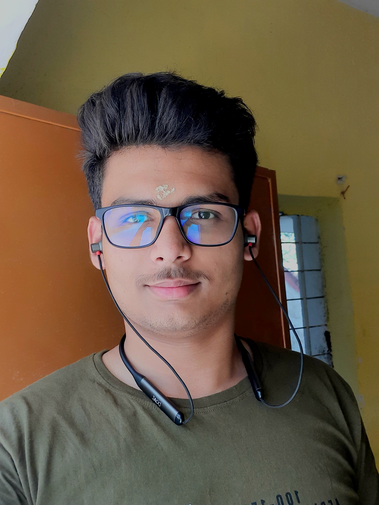

Ayush Das

Summary
I'm a very hardworking,knee-to-learn,down-to-earth person. I love gathering knowledge and is always ready to work and learn about various domains.
Education
Passed out Higher Secondary School in 2023 with a 8 C.G.P.A.
Pursuing DATA SCIENCE from IIT MADRAS
Completed 4 years of ABACUS
Work experience
Zero years of work experience
Hobbies
Reading
Exploring different domains of the world
Journaling
Skills
Communication skills
Writting
MS Excel
Contact Me